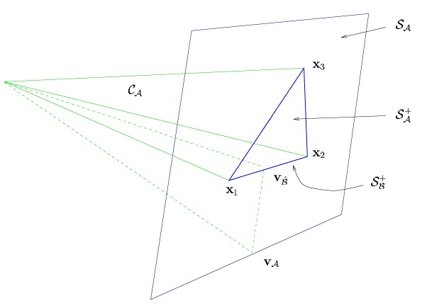

3 Modificaciones del algoritmo LARS.
Esta sección describe modificaciones simples del algoritmo LARS que producen estimaciones de tipo Lasso o Stagewise.
3.1 La relación LARS-Lasso.
La regresión Lasso estima los coeficientes minimizando \(\left\| Y-X\beta\right\|^{2},\) sujeta a \(\left\| \beta\right\|_1=\sum_{j=1}^{k}|\beta_{j}|\leq t, t>0\) .
Al derivar esta expresión respecto a un coeficiente \(\beta_{j}\neq 0\) e igualar a cero para encontrar el mínimo se llega a la condición \(-c_{j}+\alpha \text{ sign}(\beta_{j})=0\) . Como \(\alpha>0\), entonces para que la condición anterior se cumpla se necesita que el signo del coeficiente está matemáticamente obligado a coincidir con el signo de su correlación. Esto nos da una condición para LARS:
Teorema 3.1 (Lema) Sea \(\hat \beta\) una solución LASSO. Entonces, para cualquier coeficiente no nulo se debe cumplir que \(\text{sign}(\hat\beta_j)=\text{sign}(c_j)=s_j\)
Supongamos que el algoritmo se encuentra en una etapa dada con un conjunto activo \(\mathcal{A}\) y una estimación actual \(\hat{\beta}\). La iteracion del algoritmo modificado procede de la siguiente manera:
Se calcula el tamaño de paso \(\hat{\gamma}\) necesario para que una variable inactiva \((j\in\mathcal{A}^{c})\) alcance la correlación máxima actual y sea candidata a ingresar al conjunto activo.
Definimos \(d_{j}=s_{j}\left[k_{\mathcal{A}}\left(X_{\mathcal{A}}^{\top}X_{\mathcal{A}}\right)^{-1}1_{|\mathcal{A}|} \right]_{j} \text{ para } j\in\mathcal{A}\). Para \(\gamma>0\), a partir de \(\hat{y}(\gamma)=\hat{y}_{\mathcal{A}}+\gamma u_{\mathcal{A}}\) se obtiene que \(\beta_{j}(\gamma)=\hat{\beta}_{j}+\gamma d_{j}\).
Se evalúa en que momento exacto \(\gamma\) cada coeficiente activo cruzaría el valor de cero. Esto ocurre cuando \(\hat{\beta}_{j}+\gamma_{j}d_{j}=0\) o equivalentemente
\[\gamma_{j}=-\frac{\hat{\beta}_{j}}{d_{j}}.\]
El primer cambio de signo ocurre en
\(\widetilde{\gamma}=\min_{\gamma_{j}>0}\left\{ \gamma_{j}\right\}\),
para alguna covariable \(x_{\widetilde{j}}\); \(\widetilde{\gamma}\) es infinito por definición si no existe ningún \(\gamma_{j}>0\).
Si \(\hat{\gamma}\leq \widetilde{\gamma}\), entonces ningún coeficiente activo cambia de signo antes de que ingrese una variable. En este caso el algoritmo para este paso es el del LARS.
Si \(\widetilde{\gamma}<\hat{\gamma}\), entonces avanzar la magnitud total \(\hat{\gamma}\) implicaría que el coeficiente \(\beta_{\widetilde{j}}\) cruce el cero, violando la restricción Lasso. Por lo tanto, se detiene el paso LARS en curso en \(\gamma=\widetilde{\gamma}\) y eliminar \(\widetilde{j}\) del calculo de la siguiente dirección equiangular. Es decir,
\[ \hat{y}_{\mathcal{A}}\leftarrow \hat{y}_{\mathcal{A}}+\widetilde{\gamma}u_{\mathcal{A}}\quad \quad \text{ y }\quad\quad \mathcal{A}\leftarrow\mathcal{A}-\left\{ \widetilde{j}\right\}. \]
Los conjunto activos \(\mathcal{A}\) crecen de manera monótona a medida que el algoritmo LARS original progresa, pero la modificación Lasso permite que \(\mathcal{A}\) también disminuya. ‘’Uno a la vez’’ significa que los incrementos y decrementos nunca involucran más de un único índice \(j\). Este es el caso usual para datos cuantitativos y siempre puede lograrse añadiendo una pequeña perturbación a los valores de \(y\).
Tenemos el siguiente resultado:
Teorema 3.2 (Modificación LARS-LASSO) Bajo la modificación LASSO, y suponiendo la condición de “uno a la vez”, el algoritmo LARS produce todas las soluciones LASSO.
3.2 La relación LARS-Stagewise
Supongamos que la regresión por etapas da \(N\) pasos de tamaño \(\varepsilon\). Sea \(N_{j}\) el numero de veces que se eligió dar un paso en la dirección de la variable \(j\) (\(N_{j}=0\) para las variables que no están en el conjunto \(\mathcal{A}\)).
Si definimos \(P_{j}=\frac{N_{j}}{N}\) (proporción de pasos), la nueva estimación es
\[ y=\hat{y}_{\mathcal{A}}+N\varepsilon X_{\mathcal{A}}P_{\mathcal{A}} \]
Por otro parte, LARS avanza usando un tamaño de pasos continuos \(\gamma\) a lo largo de la dirección equiangular \(u_{\mathcal{A}}\)
\[ \hat{y}(\gamma)=\hat{y}_\mathcal{A}+\gamma u_{\mathcal{A}}=\hat{y}_{\mathcal{A}}+\gamma X_{\mathcal{A}}w_{\mathcal{A}} \]
donde \(w_{\mathcal{A}}=k_{\mathcal{A}}\left( X_{\mathcal{A}}^{\top}X_{\mathcal{A}} \right)^{-1}1_{\mathcal{|A|}}\). Note que las estructuras de ambas es parecida, excepto que las entradas de \((P_{\mathcal{A}})_{j}\geq0\) y pudiese ocurrir que \((w_\mathcal{A})_j<0\) .
Esta restricción de “solo proporciones positivas” define un espacio permitido (cono convexo) \(\mathcal{C}_{\mathcal{A}}\):
\[ \mathcal{C}_{\mathcal{A}}=\left\{ v=\sum_{j\in \mathcal{A}}s_{j}x_{j}P_{j}, \quad P_{j}>0\right\} \]
Si \((w_{\mathcal{A}})_{j}<0\) para algún \(j\), entonces geometricamente el vector \(u_{\mathcal{A}}\) de LARS apunta hacia una zona fuera del cono.
Para obligar a LARS a generar las estimaciones de regresión por etapas, se usa lo siguiente:
- Calculamos \(w_{\mathcal{A}}\). Si \((w_{\mathcal{A}})\geq 0\) para toda \(j\), entonces LARS avanza de manera normal.
- Si existe alguna entrada negativa en \(w_{\mathcal{A}}\), se reemplaza la dirección \(u_{\mathcal{A}}\) por su proyección ortogonal hacia el interior del cono permitido \(\mathcal{C}_{\mathcal{A}}\). Llamamos es esta nueva dirección \(u_{\mathcal{\hat{B}}}\). Al proyectarse contra los limites del cono, los \((w_{\mathcal{A}})_{j}\) negativos se hacen cero.

Tenemos el siguiente resultado:
Teorema 3.3 (Lema) Bajo la modificación anterior, el algoritmo LARS produce todas las soluciones de la regresión por etapas.